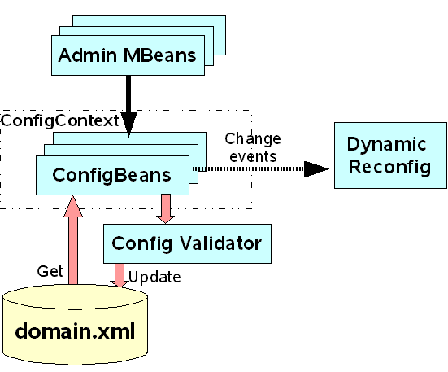

| New to GlassFish | Community Guidelines | Downloads | FAQ| Resources | GlassFish Project Home | How-Tos |
Welcome to the Configuration Management page. This page is dedicated
to discussing the Configuration Management features in GlassFish.
The source code for these features is part of this cvs repository.

Figure 1: Configuration Management Components
There are quite a lot of different metadata files for Configuration Management. Many of them are auto-generated, some created and some are created and handled manually.
Config-api sub module contains a directory with schema files for each config element. These schemas use Relax NG syntax with some proprietary extensions (extensions are defined in separate name space).
Three different kinds of files are generated directly from these schemas:
Another manually handled metadata file is the Admin MBeans Descriptors file, which contains info about all potential Admin Configuration MBeans, their interfaces, naming, and bindings with Configuration Beans. This file along with the correspondent Config Beans and Custom MBeans implementations provide all necessary information for MBeans instantiation and forming of their MBeanInfo.
ConfigBeans infrastructure code is located in commons configuration sub module in the repository and contains codes for the server beans base class, interfaces and implementations for ConfigConext, ConigChanges, and ConfigEvent classes and listeners.
Server beans are auto-generated from sun-domain_1_2.dtd. Server beans represent domain.xml elements and properties. They are located in config-api sub module of admin-core.
The same sub module also contains some manually coded helper classes ApplicationsHelper, ClustersHelper, ResourcesHelper etc.
Generic Admin MBeans are instantiated and handled by admin infrastructure according to Admin MBean descriptors file. Usually, there is one AdminMBean per configuration element.
Such MBeans provide access of JMX connected clients (CLI/GUI/HTML-adapters etc.) to basic configuration operations. You can find Admin MBeans infrastructure classes in admin sub module of admin-core in the repository.
Custom Admin MBean classes are situated in mbeans sub module. They contain additional operations for Admin MBeans and overridings of the generic basic operations.